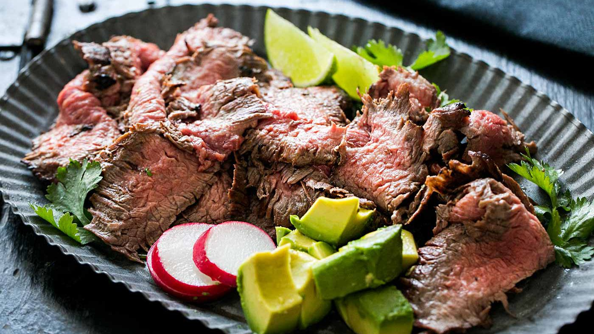

Carne Asada Recipe

Carne asada is the thinly sliced, grilled beef served so often in tacos and burritos. You can also serve it straight up, with rice and beans on the side.
Although almost any cut of beef can be butterflied into thin sheets for the carne asada, typically you make it with either flank steak or skirt steak.
Ingredients
Marinade
- 1/3 cup extra virgin olive oil
- 1/4 cup soy sauce
- 2 tablespoons lime juice
- 2 tablespoons cider vinegar
- 2 tablespoons sugar
- 1 teaspoon freshly ground black pepper
- 1 teaspoon ground cumin
- 4 garlic cloves, minced
- 1 jalapeño chili pepper, seeded and minced
- 1/2 cup finely chopped fresh cilantro leaves and stems
Steak
- 1 1/2 to 2 pounds flank or skirt steak
Optional Fixings
- Chopped avocado
- Lime wedges
- Corn or flour tortillas
- Thinly sliced radishes
- Thinly sliced lettuce
- Pico de gallo salsa
Steps
-
Whisk to combine the olive oil, soy sauce, lime juice, vinegar, sugar, black pepper, and cumin in a large, non-reactive bowl or baking dish. Stir in the
minced garlic, jalapeño, and cilantro.
-
Place the steak in the marinade and turn over a couple of times to coat thoroughly.
-
Cover in plastic wrap and refrigerate for 1 to 4 hours or overnight (if using flank steak marinate at least 3 hours).
-
Preheat your grill for high direct heat, with part of the grill reserved with fewer coals (or gas flame) for low, indirect heat. You'll know the grill is
hot enough when you can hold your hand above the grill grates for no more than one second.
-
Remove the steak from the marinade. Lightly brush off most of the bits of cilantro and garlic (do not brush off the oil).
Place on the hot side of the grill. Grill the steak for a few minutes only, until well seared on one side (the browning and the searing makes for great flavor),
then turn the steak over and sear on the other side.
-
Once both sides are well seared, move the steak to the cool side of the grill, with any thicker end of the steak nearer to the hot side of the grill.
-
Place the steak on a cutting board, tent with foil, and let rest for 10 minutes.
-
Use a sharp, long bladed knife (a bread knife works great for slicing meat) to cut the meat. Notice the direction of the grain of the meat and cut perpendicular
to the grain. Angle your knife so that your slices are wide and thin.